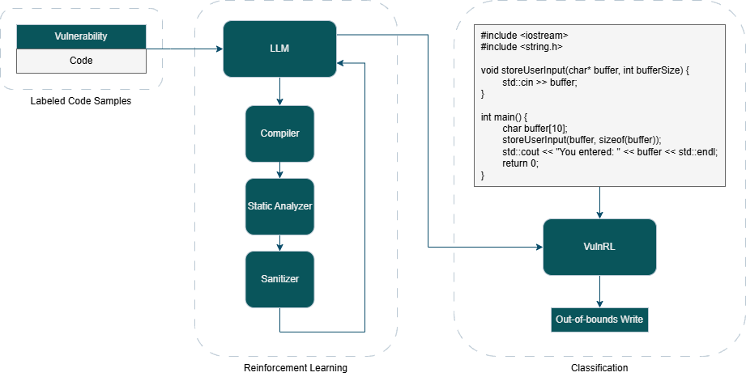
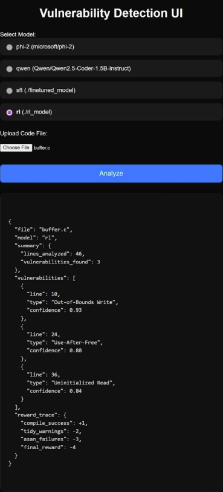

Software vulnerabilities remain a critical threat to modern computing infrastructures. Traditional vulnerability detection tools suffer from limited generalization, inconsistent coverage, and high false-positive rates due to their reliance on handcrafted patterns or narrow static analysis. We propose VulnRL, a compiler-verified reinforcement learning framework for automated vulnerability detection in source code. Our approach leverages compiler feedback---including diagnostic errors, static analyzer reports, and sanitizer outputs---as structured reward signals that refine model behavior beyond what static dataset supervision provides. The system integrates parameter-efficient fine-tuning (PEFT) with an additional reinforcement learning stage to achieve more robust representations of vulnerability semantics across Common Weakness Enumeration (CWE) categories. Additionally, we introduce an interactive web interface designed to facilitate practical evaluation and real-time inspection of model predictions and compiler signals. Our experiments demonstrate the effectiveness of PEFT fine-tuning, and we present methodology and observations for compiler-verified reinforcement learning.

Source code samples are fed into a fine-tuned coder model that predicts vulnerabilities. The model receives feedback from
the compiler and analyzers—such as Clang diagnostics, clang-tidy security warnings, and sanitizer crashes—which are
converted into reward signals to refine its predictions via reinforcement learning.
Safe software engineering relies heavily on automated tooling to detect vulnerabilities before they reach production systems. The prevalence of memory-related vulnerabilities in C and C++ programs---such as buffer overflows, use-after-free errors, and improper pointer arithmetic---demonstrates the need for improved detection approaches. Traditional static analyzers inspect code using rule-based patterns derived from programming language semantics. These tools are fast but brittle: they often fail to generalize to new vulnerability variants and warn frequently about benign code, causing alert fatigue among developers. Meanwhile, machine learning models trained on labeled datasets often conflate stylistic variations with semantic differences, and the labels themselves are limited by human annotation quality. In contrast, compiler infrastructures can identify concrete behavioral issues such as undefined behavior, out-of-bounds accesses, and dangerous memory operations. Our key insight is that compilers already act as structured vulnerability detectors, even though their outputs are not typically used to train machine learning systems. VulnRL leverages these signals to create a model that learns the semantic structure of vulnerabilities.
Our objective is to develop a vulnerability detection model that learns what makes code unsafe not merely from labeled examples, but from how compilers interpret and analyze the structure and behavior of programs. Traditional approaches treat detection as a simple supervised classification problem. However, the mapping from code to vulnerability labels is highly context-dependent and influenced by subtle interactions that static datasets do not capture. Many vulnerabilities manifest only at runtime, making compiler feedback---especially sanitizer outputs---a valuable source of supervision.
A system capable of learning from compiler diagnostics would have significant implications for both research and practice. It could:
Such a system could complement static analysis and symbolic execution, offering a new dimension in vulnerability detection.
Our system, VulnRL, has four main components:
safe) from code snippets.The key novelty is in step (3): we do not just train on labels; we train on how the compiler and security tools react to the code. For each snippet, the model picks a label. We then:
.cpp file,clang-tidy, and sanitizers,The final reward is a weighted mix of compiler reward and label agreement. This prevents the model from drifting too far away from the dataset while still letting the compiler signals move the decision boundary.
We anticipated three main issues:
The first naive attempt—using only compiler-derived reward—did not work well. The model learned that "everything is vulnerable" is a safe bet. After reward shaping and mixing in label correctness, we were able to get RL runs that improved performance on at least one dataset over the finetuned baseline.
We train and evaluate on Lemon42, MegaVul, and SecVulEval, representing varying code styles, lengths, and vulnerability categories. The vulnerable code is a mix between well designed manual examples and real-world vulnerabilities scraped from GitHub. The datasets are each split into train and test sets, which are combined into one train/test split. Metrics include multi-class accuracy, F1, and binary safe/unsafe accuracy. For each model, we report three settings:
| Model | Type | Lemon42 | MegaVul | SecVulEval | ||||||
|---|---|---|---|---|---|---|---|---|---|---|
| Acc | F1 | Binary Acc | Acc | F1 | Binary Acc | Acc | F1 | Binary Acc | ||
| Qwen 2.5 Coder 1.5B Instruct | Baseline | 0.0658 | 0.0991 | 0.4342 | 0.1056 | 0.0378 | 1.0000 | 0.0511 | 0.0093 | 0.3194 |
| Finetuned | 0.5921 | 0.5921 | 0.6053 | 0.1254 | 0.0993 | 0.7195 | 0.2486 | 0.3033 | 0.4316 | |
| Reinforced | 0.5000 | 0.4460 | 0.5132 | 0.1617 | 0.1351 | 0.7624 | 0.2081 | 0.2613 | 0.4181 | |
| DeepSeek Coder 6.7B Instruct | Baseline | 0.4605 | 0.4960 | 0.5395 | 0.0099 | 0.0148 | 0.0858 | 0.6252 | 0.5350 | 0.6435 |
| Finetuned | 0.4605 | 0.5253 | 0.5789 | 0.1155 | 0.0414 | 0.9010 | 0.0850 | 0.1246 | 0.3550 | |
| Reinforced | 0.5000 | 0.4019 | 0.5921 | 0.1800 | 0.0916 | 0.9000 | 0.1300 | 0.2083 | 0.4000 | |
| Qwen 2.5 Coder 7B Instruct | Baseline | 0.3816 | 0.3626 | 0.5000 | 0.0297 | 0.0295 | 0.2739 | 0.5279 | 0.4925 | 0.5896 |
| Finetuned | 0.8289 | 0.8299 | 0.8553 | 0.1386 | 0.1262 | 0.7657 | 0.2750 | 0.3338 | 0.4475 | |
| Reinforced | 0.8289 | 0.8299 | 0.8553 | 0.1551 | 0.1447 | 0.7657 | 0.2746 | 0.3318 | 0.4436 | |
Finetuning substantially improves performance over the baseline in most settings, especially on Lemon42 and SecVulEval. For example, Qwen 2.5 Coder 7B jumps from 0.3816 to 0.8289 accuracy on Lemon42, and binary safe/unsafe accuracy rises from 0.5000 to 0.8553. This suggests that large code models contain useful general knowledge about program structure,but targeted CWE-supervised fine-tuning is essential for precise vulnerability classification. On MegaVul, the gains are more modest. Both Qwen and DeepSeek see only small improvements in multi-class accuracy, even though binary safe/unsafe accuracy increases. This is consistent with the dataset being more challenging and skewed, with many subtle vulnerabilities and imbalanced CWE classes. Additionally, MegaVul captures lower-level coding vulnerabilities such as those involving operating system architecture (Linux).
For the MegaVul, RL improves over the finetuned model on selected metrics, indicating that compiler feedback can correct some residual misclassifications. On the other datasets, RL tends to move performance between the baseline and the finetuned model, performing better than zero-shot, but not uniformly better than supervised fine-tuning. These trends are consistent with our expectations: RL is most helpful where compiler feedback strongly correlates with true vulnerabilities, and less helpful where diagnostics are noisy or ambiguous. The results correspond with earlier analysis--MegaVul consists of low-level code samples, which produce security tool detectable alerts.
Qualitatively, RL tends to:
clang-tidy and sanitizers.We also created a UI that allows users to interact with the model, view its outputs, and see feedback from compiler and analyzer tools. The UI makes it simple to upload a C++ file, choose a model (baseline, finetuned, RL), and inspect both the predicted label and the underlying diagnostics.
The interactive UI has proven invaluable in identifying these cases and guiding refinements. Being able to visually inspect how a model's prediction changes after RL, alongside concrete compiler messages, provides a powerful debugging loop that would be difficult to replicate from aggregate metrics alone.
Our experiments show that compiler-verified reinforcement learning is a promising way to improve learned vulnerability detectors beyond what is achievable with supervised fine-tuning alone. The supervised PEFT stage provides a strong baseline on multiple datasets, and the RL stage can further refine behavior when compiler and analyzer feedback align with true vulnerabilities.
Reproducibility. The pipeline is implemented with open-source datasets, standard compilers (Clang, clang-tidy, sanitizers),
and configuration-driven training scripts. Different groups should be able to reproduce our qualitative trends, although exact
numbers may vary due to hardware differences and minor nondeterminism in CUDA and compiler behavior.
Ethical considerations. Any tool that automatically flags vulnerabilities carries risks:
We recommend combining such models with human review, logging, and clear documentation, and treating VulnRL as a decision support tool rather than a final authority on security.
Limitations and future work. Our current system:
Future work includes refining the reward function to better match real vulnerabilities, using curriculum RL to stabilize training, scaling RL to larger models and multi-file projects, and extending the approach to other languages and security domains. We also plan to deepen the integration into developer workflows and CI pipelines so that compiler-verified RL can be evaluated in more realistic settings.